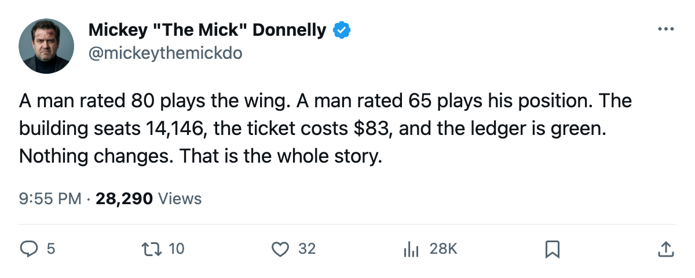
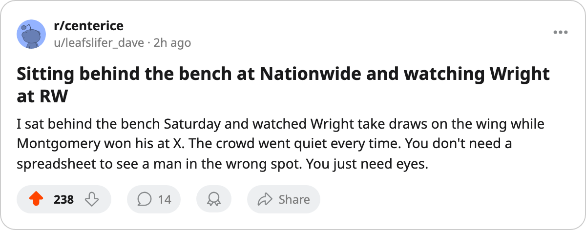

I WROTE IT YESTERDAY. NOTHING CHANGED. THEY MAKE $22.90M. OF COURSE NOTHING CHANGED.
Columbus turns a profit on a $62.03M payroll, seats 14,146 at $83, and its coach still has his 80-rated center on the right wing.
 Mickey "The Mick" DonnellyColumnist, ex-goalie · The Penalty Box
Mickey "The Mick" DonnellyColumnist, ex-goalie · The Penalty Box
The Columbus coach: 0-1-0, a mis-slotted 80-rated center, and the worst morale in the league

Yesterday I told you Tyler Wright78 centers nothing for  Columbus Blue Jackets. The Bureau's Book has him at 80. His coach puts him on the right side of the third line and slides Jim Montgomery, rated 65, into the center spot on the same unit. A 15-point gap between the man playing the position and the man parked beside him on the wing.
Columbus Blue Jackets. The Bureau's Book has him at 80. His coach puts him on the right side of the third line and slides Jim Montgomery, rated 65, into the center spot on the same unit. A 15-point gap between the man playing the position and the man parked beside him on the wing.
What I didn't say yesterday, because I didn't have the nerve, is why nobody in that building is going to fix it.
Columbus Blue Jackets turn $22.90M in profit. Revenue $31.26M, payroll $62.03M, 14,146 people through the turnstile at $83 a seat. The building is not full. The product is not good. The money still clears. When the ledger works, nobody in a front office picks up a phone.
The room knows. The Morale Scale puts Columbus at 90.3, tied with Atlanta for the worst in this league. You think Wright doesn't know what he's watching? You think he's happy skating the right wing at draws he shouldn't be taking?
The math that keeps the lights on
| Club | Payroll | Revenue | Profit | Attendance | Ticket |
|---|---|---|---|---|---|
| CBJ | $62.03M | $31.26M | $22.90M | 14,146 | $83 |
That table is the reason nothing changes. A losing team with empty seats and a bad coach is a crisis. A losing team with 14,146 fans at $83 and a $22.90M profit is a business model.
 Yanic Perreault74 is rated 76. He centers the second line.
Yanic Perreault74 is rated 76. He centers the second line.  Joe Juneau71 is rated 73 and centers the third. These are men in the right slots. Then Wright comes along at 80 and goes to the wing because apparently the bench likes the way its third line looks with a 65 at X.
Joe Juneau71 is rated 73 and centers the third. These are men in the right slots. Then Wright comes along at 80 and goes to the wing because apparently the bench likes the way its third line looks with a 65 at X.
One goalie holding up the whole thing
 Pascal Leclaire89 is the only reason this piece isn't longer. The 22-year-old goaltender sits at 91 overall, +9 on the Bureau's Development Index, the highest-rated man the Index carries from that roster this week. He kept Columbus to a 2-1 loss against Chicago instead of a blowout, and by the looks of this coaching he'll be the only man in that building who ever gets traded somewhere that plays a centerman at center.
Pascal Leclaire89 is the only reason this piece isn't longer. The 22-year-old goaltender sits at 91 overall, +9 on the Bureau's Development Index, the highest-rated man the Index carries from that roster this week. He kept Columbus to a 2-1 loss against Chicago instead of a blowout, and by the looks of this coaching he'll be the only man in that building who ever gets traded somewhere that plays a centerman at center.
I want a man rated 80 to play the position the Bureau's Book says he plays. The rest is what people with calculators do to avoid saying the obvious.

